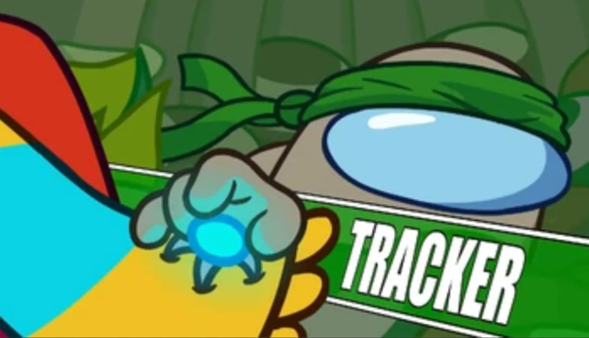

1. Historia, Contexto y Rol Operativo en la Misión
Incorporado oficialmente por Innersloth en la trascendental actualización de roles de junio de 2024, el Localizador (denominado en la versión original en inglés como Tracker) aportó una dimensión inédita de vigilancia táctica a la tripulación. En instalaciones complejas, extensas y de difícil visibilidad como The Airship o Polus, perder de vista a un tripulante con comportamiento errático suele desembocar en una tragedia irreversible para quien se cruce en su camino en pasillos solitarios.
El Localizador solventa este desafío mediante la implantación de un microtransmisor telemétrico adhesivo que se acopla a corta distancia en el traje presurizado de cualquier compañero. Una vez adherido, el chip transmite una señal de radiofrecuencia encriptada que se traduce en un punto pulsante en el minimapa personal del Localizador. Esta lectura permite seguir la trayectoria del sujeto en tiempo real, observando hacia qué ala de la nave se dirige, cuánto tiempo permanece en una sala y si sus desplazamientos respetan las leyes de la física o incurren en maniobras imposibles a través de mamparos.
La mayor fortaleza del Localizador radica en su capacidad para descubrir impostores que se desplazan por conductos de ventilación: si el punto telemétrico de un sospechoso desaparece de una habitación y reaparece instantáneamente en el otro extremo del mapa sin haber atravesado los pasillos intermedios, la prueba matemática de que utilizó un ducto queda registrada sin margen para la duda.
2. Análisis de Mecánicas, Telemetría y Cooldown
El sistema de rastreo del Localizador combina sigilo táctico y análisis cartográfico:
2.1. Marcador Telemétrico [Activa por Toque]
Al situarse a corta distancia de un tripulante, implanta un rastreador. A partir de ese momento, su posición se dibuja en tiempo real sobre el minimapa personal. Esta capacidad ejerce un impacto directo sobre la dinámica de supervivencia en la nave (Duración Señal: 10 a 25 Segundos), obligando tanto a aliados como a adversarios a recalcular constantemente sus rutas de tránsito y tiempos de reacción.
2.2. Detección de Salto Espacial [Forense de Mapa]
Si el sujeto rastreado ingresa a una rejilla de ventilación, su icono salta a velocidad ultrasónica entre salas incomunicadas a pie, delatando el uso de ductos. Esta capacidad ejerce un impacto directo sobre la dinámica de supervivencia en la nave (Efecto: Expone ventilaciones), obligando tanto a aliados como a adversarios a recalcular constantemente sus rutas de tránsito y tiempos de reacción.
2.3. Pulsos de Radar [Vigilancia Móvil]
La señal emite un pulso periódico, permitiendo anticipar si el sospechoso acorrala a una víctima en una sala cerrada antes de que se produzca el ataque. Esta capacidad ejerce un impacto directo sobre la dinámica de supervivencia en la nave (Enfriamiento (CD): 15s a 25s Cooldown), obligando tanto a aliados como a adversarios a recalcular constantemente sus rutas de tránsito y tiempos de reacción.
3. Ventajas Estratégicas y Puntos Vulnerables
3.1. Ventajas Operativas y Fortalezas Estratégicas
El despliegue eficiente de este rol aporta ventajas sustanciales que permiten maximizar el control del mapa y acelerar los objetivos del equipo:
- Ventaja táctica: Permite vigilar a jugadores dudosos manteniendo una distancia física segura.
- Ventaja táctica: Verifica coartadas cartográficas en asambleas con registros de recorrido exactos.
- Ventaja táctica: Extraordinaria efectividad en mapas extensos como The Airship y Polus.
- Ventaja táctica: Detecta si dos jugadores se separaron justo antes de que uno de ellos apareciera muerto.
3.2. Vulnerabilidades Críticas y Limitaciones Operativas
No obstante, el operador se encuentra sujeto a vulnerabilidades severas que los adversarios procurarán capitalizar en los momentos de mayor tensión:
- Punto vulnerable: Solo puede rastrear a un jugador de manera simultánea.
- Punto vulnerable: Abrir el minimapa reduce el campo de visión físico, dejándolo vulnerable a emboscadas.
- Punto vulnerable: Si rastrea a un inocente, no obtiene datos sobre el verdadero asesino que opera en otro sector.
- Punto vulnerable: El rastreador se desactiva automáticamente al convocarse una asamblea de emergencia.
4. Estrategia Avanzada y Sociometría del Debate
4.1. El Marcaje en Pasillos de Entrada
Planta tu rastreador en jugadores que se alejen en solitario hacia zonas de alto riesgo (como Electricidad o Navegación). Si ves que el punto se congela y poco después se reporta un cadáver en esa sala, sabrás exactamente quién estuvo a solas con la víctima.
4.2. La Prueba del Ducto Irrefutable
Si observas en tu mapa que el sospechoso estaba en Administración y de repente su punto reaparece en Cafetería sin pasar por los pasillos, has atrapado a un impostor (o a un Ingeniero no declarado) de manera matemática.
5. Perfil Operativo y Parámetros Técnicos
Desde la perspectiva de diseño lúdico y balance de juego estandarizado, este personaje se caracteriza por los siguientes parámetros oficiales normados:
- Facción: Tripulación.
- Tipo de Rol: Rastreo / Vigilancia.
- Dispositivo: Microtransmisor GPS.
- Duración Marcador: 10s a 30s (Configurable).
- Enfriamiento (CD): 15s a 25s.
- Origen: Update Oficial 2024.
- Dificultad: Intermedia.
6. Recursos Multimedia Obligatorios: Sonido y Vídeo
Pulso de Telemetría del Radar
Bip electromagnético de localización continua y actualización de coordenadas.
Vídeo Demostrativo del Localizador
Seguimiento de un impostor en el minimapa y detección de saltos por ductos.
7. Archivos Gráficos y Evidencias Visuales
